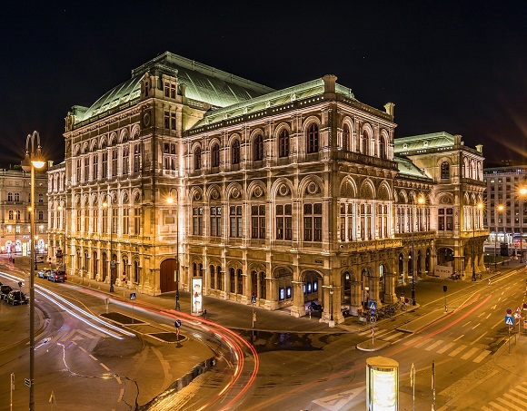
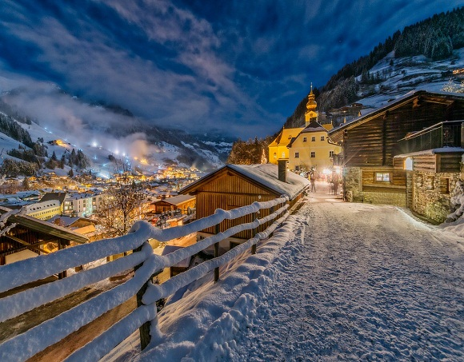

1. Viena
Passear por Viena, a bela capital da Áustria, é como revisitar um passado cheio de história e muito glamour. É voltar nos tempos da dinastia Habsburgo e deslumbrar-se com palácios imperiais, monumentos, igrejas que são verdadeiras obras de arte, ruas e bairros que se modernizaram com o passar do tempo, mas não deixaram de lado a sua essência. Na gastronomia, Viena também não decepciona o visitante, sendo os cafés da cidade grandes patrimônios locais.
2. Salzburg
A cidade austríaca que faz fronteira com a Alemanha parece ter saído de um conto de fadas, de tão bela. Isso por conta da combinação paisagens naturais – montanhas, o rio Salzach – e a arquitetura de palácios, igrejas, monumentos. Lembrando que Salzburg é, também, o local de nascimento do compositor Wolfgang Amadeus Mozart, um destino, portanto, altamente musical e cheio de referências ao famoso filho.
3. Paris
Pelo jeito, Paris não sai de moda nunca. Um grande centro atemporal com muito o que fazer, rico em história, cultura, cheio de pontos turísticos mundialmente conhecidos – Torre Eiffel, o Museu do Louvre, o Arco do Triunfo, o Sacré Coeur – bons restaurantes, ruas de compras e muito mais. A dica para aqueles estiverem voltando pela segunda ou terceira vez é explorar os bairros vibrantes dessa cidade tão cheia de possibilidades!
4. Madri
Madri, a capital do Reino da Espanha, é um destino que exala história, altamente indicado para os apaixonados por arte, cultura, arquitetura e compras. A cidade reúne três dos mais importantes museus do mundo: Prado, Reina Sofia e Thyssen-Bornemisza, além de edifícios seculares, que são fonte de uma história inigualável. Ah, andar pela Gran Vía, a Times Square da cidade, e fazer uma parada na Plaza Mayor, como um legítimo madrilenho, são alguns dos passeios que você não pode deixar de fazer.